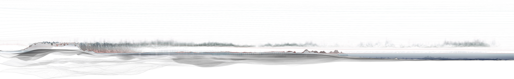

Within reach, beyond grasp
Atmospheres are both spatial and material in their meteorology and affect. Our immersion in the weather-world conditions both the senses and our engagements within and about the world around us. The monsoon, with its compression and expansion of aerial space, embeds within its inhabitants a pulsating rhythm of somatic responses that mark the delivery of meteorological material – rain, wind, and heat. These in turn produce spheres of economic, social, and political action that generate the variable and affective dimensions of atmospheres. Through the lens of the monsoon, atmospheres become a regenerative form of architecture co-constructed by the meteorological and affective conditionings of elemental, social, political, and financial spheres.
“The sight of a profound sky is, of all impressions, the closest to a feeling. It is more a feeling than a visual thing, or, rather, it is the definitive fusion, the complete union of a feeling and sight”.1

Above: Read from right to left (south to
north), this geologic and atmospheric
cross-section cuts through India at 77.5°
longitude and portrays the gathering and
advancement of the summer monsoon
from June to August 2016.
Below: Cloud formations above Elliot’s
Beach, Chennai.
Enveloped within the milieu
In monsoonal landscapes, collective atmospheres of kinship between monsoon and inhabitants, human and nonhuman, are both cultural and material. Derek McCormack’s idea of “envelopment” provides a speculative and experimental framework for assessing multiple and layered atmospheres.2 An atmospheric milieu is more than a physical encounter. It draws cultural, political, and material dimensions into each moment of space and time.
Above: These exaggerated studies show
the variable and deforming nature of the
troposphere throughout the year, as weather
patterns and pressure differences compress
and inflate the lowest layer of the earths
atmosphere.
Below: Looking towards the Bay of Bengal
across sand dunes at Valmiki Nagar in Chennai.
Matter, form and interval
Below: These Monsoonal Clocks describe the monthly rainfall totals from 1905-2015 within various global monsoonal regions. Each coloured curve represents one year, its distance from the clock centre denotes the amount of rainfall for that month measured in millimetres. The clocks aim to demonstrate the different cyclical rainfall patterns and amounts between regions, but also the extreme variability and outliers within this.
Often meteorological and geophysical elements such as wind or sea currents materialise the social and elemental dimensions of atmospheres. However, in the context of the south Asian monsoon, such entanglements are not only local and palpable, they are the rhythmic fabricators of global, seasonal envelopment. As formal assemblages of meteorological elements, the intervals and intensities of monsoons experienced at local and regional scales are structured by planetary dynamics. Movements of heat, wind, and moisture form an interlinked network of twenty-two upper air troughs, nine of which are monsoonal.
Above: A drawing of the global monsoon
trough depicted with isobars. The left
hand side of the drawing shows the
position of the trough from March
to August, the right hand side from
September to February.
Below: Birds gathering in the air above Elliot’s Beach, Besant Nagar, Chennai.
Global seasonal envelopments
Connected by wind and sea currents that constantly circle the globe, upper air troughs are zones of high and low pressure that form a dynamic infrastructure for meteorological flow between them. As pressure shifts between them, each envelope compresses or expands, creating patterns of seasonal change that govern social and elemental entanglements or atmospheres. All nine monsoonal troughs act in accordance with the Inter Tropical Convergence Zone (ITCZ) that moves between north and south of the equator. Determined by the earth’s need to balance its energy, the ITCZ shifts, and with it the meteorological formation monsoonal envelopment.
“There is no space without aether, and no aether which does not occupy space”.3
Above: The global monsoon from March to September (left) and September to February (right). The drawing shows cyclones, high and low pressure centres, the Intertropical Conversion Zone and the nine monsoonal troughs its movement generates.
Meteorological conditioning
Meteorological conditioning allows a sphere to be inhabited and each of its elements carries affect. When the monsoon arrives in Kerala each year, bodies whose cultural, economic, and political existence depends on the arrival of its winds and rains, cheer for the skies that darken, the waves that crash and the electricity that roars. The visceral events of the monsoon’s arrival condition the air, co-constructing the monsoonal atmosphere and the scales of risk and renewal that it brings. With its dates of arrival and departure subject to variability, the precision of monsoonal envelopment holds particular pertinence to lives dependent on the seasonal markets it shifts.
Above: View towards the the Laccadive
Sea at Kanyakumari in Tamil Nadu,
facing the Thiruvalluvar Statue and the
Vivekanada Rock Memorial. This is
the direction from which the monsoon
approaches in June each year.
Below: A late monsoon downpour in
Yangon in October 2019, a strong Indian
Ocean Dipole (IOD) year.
Interlinking sphere
Energy differentials between the east and west coasts of our planet’s oceanic basins produce shifting climatic events. Significant of these are the Pacific El Niño and La Niña Southern Oscillations (ENSO) and the Indian Ocean Dipole (IOD). These oscillations impact the folding of the ITCZ and carry significant consequence for the meteorological conditioning of what Peter Sloterdijk would call interlinking “spheres”.4 A strong IOD like that of 2019 for instance upended weather dependent markets like salt and wheat which rely on steady supplies of sun or rain. Deviations from the monsoon’s regular schedule and changes to its form expose the larger planetary systems within which envelopment operates.
Affective construction
The 2019-2020 IOD event perforated India’s meteorological and affective monsoonal atmosphere, with a knock on effect on an ensemble of characters. Declared the “chief finance minister of India” by President of India, Pranab Mukherjee, the monsoon is the master of the nation’s annual gross domestic product (GDP) and stock indices (CFDs).6 With the unseasonal late arrival of rains in October 2019, the monsoon stepped outside of its usual bounds and announced its presence in the material delivery of rains and the affective delivery of anxiety. Upsetting markets reliant on predictable supply chains, economic shockwaves reverberated around the globe in a global drama of violent air.
“…it is often through the wound inflicted by things on the immaculate blue that we are able to feel within ourselves a strange longing for the sky to be intact”.5
Newspaper articles collected in Dhaka in November 2019 expressing a range of monsoonal anxieties.
Conclusion
Through its ability to implode and expand in response to the pressures of its constituencies, an atmosphere’s geometry claims vitality. The meteorological intensity of the monsoon demands that the atmosphere be seen not as background, but as a performer in the co-construction of the ever-gulfing ‘out-there’ that is fuelled by the affective and material instabilities required to balance an everdynamic earth.
From left to right: The atmosphere above St Thomas Mount, Chennai and Kanyakumari, Tamil Nadu.
1 S.T. Coleridge quoted by J. Charpentier in Coleridge: the Sublime Somnambulist, cited in G. Bachelard, Air and Dreams: An Essay On the Imagination of Movement, J. H. Stroud (exec. ed.) and R. S. Dupree (trans. ed.), Dallas, The Dallas Institute Publications, 1988, p. 165.
2 D.P. McCormack, Atmospheric Things: On the Allure of Elemental Envelopment, Durham NC, Duke University Press, 2018.
3 A.S. Eddington, New Pathways in Science, Cambridge, Cambridge University
Press, 1935, p. 39.
4 P. Sloterdijk, Bubbles: Spheres 1, Cambridge MA, MIT Press, 2011.
5 G. Bachelard, Air and Dreams: An Essay On the Imagination of Movement, J.
H. Stroud (exec. ed.) and R. S. Dupree (trans. ed.), Dallas, The Dallas Institute
Publications, 1988, p. 165.
6 Dezan Shira and Associates, ‘Monsoon Season: India’s Real Finance
Minister’, India Briefing, 19 May 2015, https://www.india-briefing.com/news/
monsoon-season-indias-real-finance-minister-10714.html/ (accessed 10
January 2021).
Text: Christina Leigh Geros.
Design: Jonathan Cane.
Introduction
Drawing by John Cook.
Sources: Climatic Data: NOAA/NCEP CFSv2 Climate Forecast System +
NASA Earth Observations; Aerial Imagery: NASA Blue Marble Imagery;
Topography + Bathymetry: ETOPO1 Global Relief Model.
Video by Lindsay Bremner, edited by Christina Leigh Geros.
Enveloped within the milieu
Drawings by John Cook.
Sources: Tropospheric Height Data: NOAA/NCEP CFSv2 Climate Forecast
System; Aerial Imagery: NASA Blue Marble Imagery.
Video by Beth Cullen.
Matter, form and interval
Drawings by John Cook and Christina Leigh Geros.
Sources: Mean Historical Rainfall Dataset, Climatic Research Unit (CRU)
of University of East Anglia (UEA).
Video by Lindsay Bremner, edited by Christina Leigh Geros.
Global seasonal envelopments
Drawing by Christina Leigh Geros.
Meteorological conditioning
Video by Lindsay Bremner, edited by Christina Leigh Geros.
Interlinking spheres
Drawings by John Cook.
Video by Lindsay Bremner.
Affective construction
Photographs by Lindsay Bremner.
Conclusion
Photographs by Lindsay Bremner.